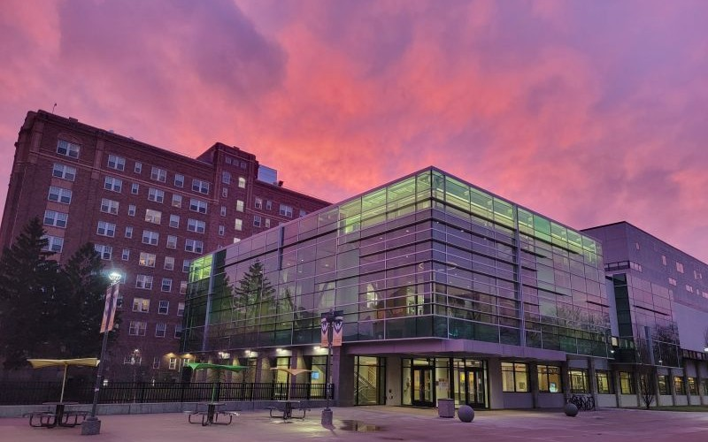

Looking into my current class schedule (Fall 2026)
| CSC 3110 (Algorithm Design and Analysis) | This course focuses on the design and analysis of algorithms. In this course, I will evaluate the efficiency of various algorithms via a mathematical analytical framework known as asymptotic analysis. I will also learn about general algorithmic design approaches and their application to various computational problems. |
| CSC 3100 (Computer Architecture and Organization) | This course will teach fundamental circuit components and techniques for optimizing circuits. I will be expected to write simple programming constructs and programs using assembly language. ALso, I will need to understand the processor memory hierarchy. |
| CSC 5750 (Principles of Web Technology) | This course will give me a more in depth understanding about the Internet and the World Wide Web. I will learn how to make static and dynamic content in the web as well as the process of deploying websites. |
| HON 4260 (United Nations SDGs-COIL) | Students from Wayne State University and Hochschule Ruhr West University (Germany) work together online through collaborative discussions and intercultural exchange. Framed by the United Nations Sustainable Development Goals (SDGs), the course combines cross-cultural collaboration, throguh sustainability related issues. |
| PHY 2170 (University Physics 1 for Scientists) | This course will teach me how to apply basic physical laws to analyze real-life or unstructured situations (“word problems”), both descriptively and numerically. I will be able to analyze both existing physical situations as well as situations that someone else would want to construct. |
| PHY 2171 (University Physics 1 Experimental Laboratory) | This course is an extention to PHY 2170. In this course I will analyze physical quantities of one-dimensional motion and their relationship to forces. I will also apply the mathematical language of vectors to physical forces. |
Previous Courses I have Taken
This section includes computer science related courses I have taken in the past. Most of the classes listed taught me about the C++ language as well as the idea of Object Oriented Programming. Most recently, I have also learned about Java Programming. One of the most interesting thing I have learned so far is the different algorithms and data structures offered within each language. I find it fasinating how we have to choose which data structure/algorithm suits the situation the best.
- CSC 1100
- CSC 1500
- CSC 2110
- CSC 2200
- CSC 3010
- CSC 3020
- CSC 3750
- CSC 5272
As a honors student, I am required to take honors classes in order for it to count towards my major. The honors classes have allowed me to learn more about the history of Detroit in a deeper level. Also, my seminar taught me about technology and its drawbacks. Additionally, I got the opportunity to research with one of my professors about collaborative undergraduate learning in the social sciences.
- HON 1000
- HON 2000
- HON 3000
- HON 4990
This section includes all the Basic Engineering classes I had to take. Most of these classes range from Python, engineering with Arduino, and Statistics. Out of these classes, BE 1200 was definetely my top classes. Although it was difficult, Statistics was one of my favorite courses due to the complexity of the concept. It was definetely interested to learn more about the different types of distributions as well as completing statistical problems
- BE 1200
- BE 1600
- BE 2100
In order to get a B.S. in Computer Science, a lot of General Education courses are required. The list below contains the General Education courses I took at Wayne, it does not show all of them ebcuase some of my AP Cclasses were transferred over. Even though most of these classes are fillers, it is nice to have a balance of different subject classes, as computer science is already a difficult course. Most of these classes allowed me to solidify my foundations and balance my class schedule.
- MAT 2010
- MAT 2020
- MAT 2030
- MAT 2150
- ENG 3050
- ENG 3060
- PHI 1110
Noteworthy Projects
From The Shore Website Refresh
For my ENG 3060 (Technical Communications - Oral Presentations) class, my professor collaborated with smalll businesses in TechTown to bring a series of real-life projects to the classroom. My team and I decided to work with From The Shore, a company for shore anglers looking to build a community. We were tasked with refreshing the website becuase the owner used a template beforehand. I have provided a link to the website, feel free to check it out!
Zapenda Website Refresh
During my internship last summer, I worked as a web Developer for Zapenda, a congo-western sustainable fashion brand that makes custom pieces of clothing. My job was to add a custom order integration in their website, so clients would not have to come in person to get their measurements done. It was really interesting working with a shopping company to help with web development needs. I have provided a link to the website, feel free to check it out!
Other Cool Website Projects
A class I took at MCC was Intro to Web Programming, an introductory website development course. Before taking this course, I had no experience about websites and how to build them. During the course we built a website that shows all of our projects throughout the semester. I really enjoyed learning a lot of fundamentals for website development. I have provided a link to the website, feel free to check it out!